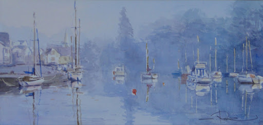

Finistère jusqu'au bout des rêves
Actualités
Finistère : trois requins-pèlerins observés par des plongeurs près des côtes.
Trois implosants requins-pèlerins ont pu être observés par un groupe de plongeurs, ces derniers jours, en face du Guilvinec. Les requins pèlerins, dont le plus gros devait approcher les 10 mètres de long, ont frôlé l'embarcation des plongeurs.
Pont-Aven : la ville des peintres et de la galette
Son chevalet sur le dos, Christien Ruiz arpente les rues de Pont-Aven depuis 30 ans. Cet aquarelliste s'est installé ici, attiré par les paysages de la ville, également connue pour ses célèbres galettes. Ce qu'il préfère, c'est la rivière et ses tumultes. "Chaque jour est différent. En fonction des lumières, il faut choisir aussi les couleurs" confie le peintre.
Des chercheurs viennent de déterminer que la plus ancienne carte d'Europe a été retrouvée à Leuhan. Il s'agit d'une dalle en schiste ornée.
C'est une dalle ornée qui intrigue depuis des dizaines d'années. À Saint-Bélec en Leuhan, au XIXe siècle, le préhistorien Paul du Chatellier a effectué des campagnes de fouilles dans des tumulus, notamment dans les Montagnes noires. Parmi ses découvertes, il y a donc cette dalle "située dans le caveau d'un tumulus" abritant une sépulture, et qui ne serait pas moins que la plus ancienne carte en relief retrouvée en Europe voire au monde !
Coronavirus en Bretagne : Le port du masque est-il obligatoire sur les plages ?
Non, le port du masque n'est pas obligatoire sur les plages du département du sud-Bretagne ni sur celles du Finistère.
Quimper devient la première ville considérée "zone de liberté pour les personnes LGBTQ+" en Europe.
Quimper est désormais la première ville en France, mais aussi en Europe, à être considérée comme une "zone de liberté pour les personnes LGBTQIA+ (lesbiennes, gays, bisexuels, transgenres, intersexes et queer)", rapportent ce lundi nos confrères.
Grandes marées : la pêche à pied est interdite sur les plages du Finistère.
Ramasser certains coquillages est interdit sur une quizaine de plages du Finistère et déconseillé sur une dizaines d'autres alors que des grandes marées, propices à la pêche à pied sont annoncées.